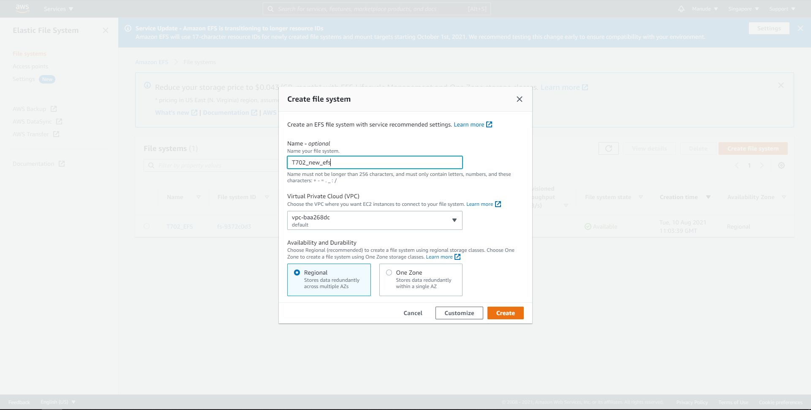
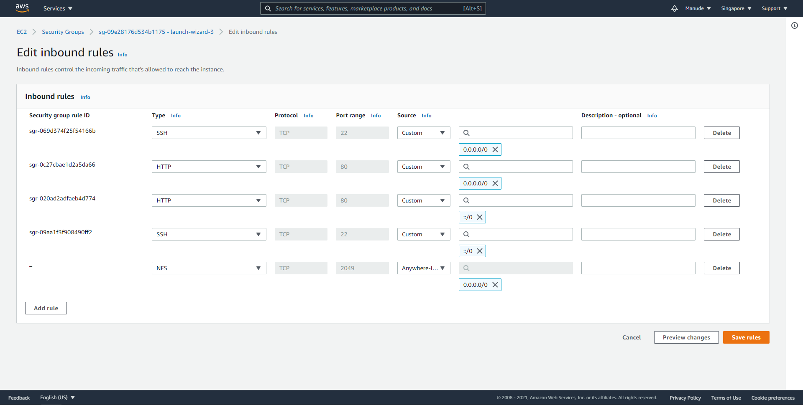
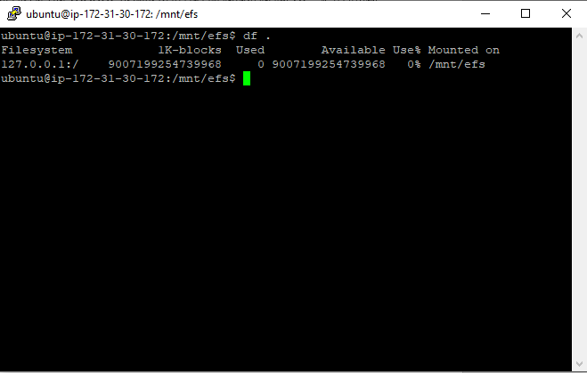
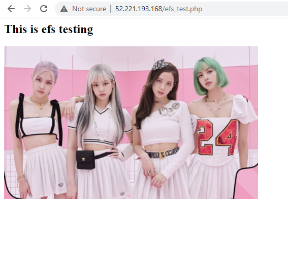

EFS (Elastic File System)
EFS คือ บริการ storage ของ Amazon ในรูปแบบของ NFS (Network File System) โดยให้เลือกตามรูปด้านล่าง

หลังจากนั้นให้เลือก create file system ต่อมาให้ตั้งชื่อและเลือก VPC ที่ต้องการและกด create ดังรูปด้านล่าง
ต่อมาให้กลับไปที่ EC2 ที่ต้องการเชื่อมต่อกับ EFS ให้เพิ่ม protocol NFS ลงใน Security group ดังรูปด้านล่าง
เมื่อทำการ save rule เรียบร้อยกลับไปที่ EFS เลือก security ให้ตรงกัน จากนั้นให้ใช้ putty เชื่อมต่อกับ EC2 และทำการลงเครื่องมือที่จำเป็นบนเครื่อง server ตามขั้นตอนดังนี้
ขั้นตอนที่ 1 install make โดยพิมพ์
sudo apt-get intstall make
ขั้นตอนที่ 2 install git และ binutils พิมพ์
sudo apt-get -y install git binutils
ขั้นตอนที่ 3 change directory ไปยังที่ install efs-util ไว้พิมพ์
cd /path/efs-utils
ขั้นตอนที่ 4 รัน batch file ชื่อ build-deb.sh โดยพิมพ์
./build-deb.sh
ขั้นตอนที่ 5 ทำการ install efs-utils พิมพ์
sudo apt-get -y install ./build/amazon-efs-utils*deb
เมื่อทำครบทุกขั้นตอนแล้วให้สร้าง directory ที่จะทำการ mount drive EFS โดยพิมพ์
Sudo mkdir -p /mnt/efs
ต่อมาให้เรา copy command line สำหรับ mount โดยเลือกไปที่ EFS ที่สร้างไว้เลือก Attach แล้วทำการ copy command line มาดังรูปด้านล่าง

จากนั้นเปลี่ยนที่อยู่ของ directory ที่เราสร้าง เมื่อ mount เสร็จแล้วทำการตรวจเช็คโดยใช้คำสั่ง df . จะปรากฏดังรูปด้านล่าง
จากนั้นให้พิมพ์ sudo chmod 777 . เพื่อให้ upload ไฟล์ได้ จากนั้นให้ใช้ FileZilla ในการ upload ไฟล์ขึ้น server และลองดึงข้อมูลจากไฟล์ให้มาโชว์ใน efs_test.php ผลลัพธิ์จะได้ตามรูปด้านล่าง
สรุป EFS เหมือนกับเป็น HDD ส่วนกลางให้เครื่องต่างๆที่เรามีอยู่ใน VPC เดียวกันสามารถเรียกใช้ได้